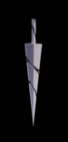
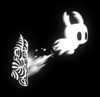
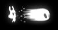

Charakterystyka
Rycerz jest niemy – nie posiada głosu i nie może wyrażać emocji. Jest on bezpłciową istotą zrodzoną z Pustki.
Rycerz posiada białą głowę z niewielkimi rogami i czarnymi otworami na oczy. Nosi szary, lekko poszarpany płaszcz zakrywający jego ramiona. Na plecach nosi swoje stare, popękane Ostrze, które z czasem może być naprawiane i ulepszane.
Początkowo jedynymi umiejętnościami bohatera jest walka Ostrzem czy też regenerowanie straconych punktów zdrowia za pomocą Duszy, pozyskiwanej z innych istot. Z biegiem czasu protagonista zdobywa nowe umiejętności, a jego broń zyskuje na jakości.
Zdrowie, Cień, Dusza
Zdrowie
Zdrowie postaci jest reprezentowane przez Maski w lewym górnym rogu ekranu. Początkowo Rycerz posiada ich 5, ale w trakcie gry może zbierać Odłamki Maski. Zebranie czterech odłamków formuje jedną dodatkową maskę. Postać może posiadać ich maksymalnie 9. Za otrzymywanie obrażeń Rycerz traci jedną maskę, ale niektórzy przeciwnicy są w stanie odebrać mu dwie, cztery, a nawet więcej. Maski mogą być zregenerowane przez uleczenie się lub siadanie na ławce.
Cień
Gdy Rycerz straci wszystkie maski, jego powłoka rozpadnie się, uwalniając Cień. Ekran staje się następnie czarny, a Rycerz budzi się na najbliższej ławce, a główne naczynie na Duszę jest pęknięte, pozwalając zgromadzić maksymalnie jedynie dwie trzecie Duszy. Postać nie posiada także swoich Geo. Aby je odzyskać i naprawić naczynie na Duszę, Rycerz musi udać się do miejsca w którym zginął i pokonać Cień, który wróci z powrotem do niego.
Dusza
Dusza jest reprezentowana przez okrągłe naczynie z oczami na lewo od paska zdrowia. Jest to energia Rycerza służąca do rzucania zaklęć, a także leczenia się. Pozyskiwana jest głównie przez uderzanie przeciwników, choć istnieją również inne sposoby na jego zdobycie, poprzez różne narzędzia lub miejsca. Rycerz może zwiększyć maksymalną pojemność naczynia zbierając Fragmenty Naczynia. Po zebraniu trzech odłamków uformuje się jedno dodatkowe naczynie, a gracz będzie mógł ich posiadać maksymalnie 3.
Ostrze + Zaklęcia
Ostrze to główna broń Rycerza, służąca mu jako miecz. Może nim uderzać w dowolnym kierunku. Służy głównie do zabijania przeciwników, ale może być także zastosowany w przemieszczaniu się. Skacząc i uderzając Ostrzem pod siebie postać może odbijać się od przeszkód takich jak kolce. Ostrze może być ulepszony u Kowala, aby zadawało więcej obrażeń, a Mistrzowie Ostrza mogą nauczyć Rycerza Sztuk Ostrza, specjalnych ataków związanych z Ostrzem.
Zaklęcia otrzymywane są od Ślimaczych Szamanów lub z innych źródeł. Są to pojedyncze ataki zadające duże obrażenia, które wykorzystują Soul. Każde zaklęcie może być ulepszone do silniejszej wersji, poprzez znajdywanie sekretnych pomieszczeń w poszczególnych zakątkach Hallownest.


